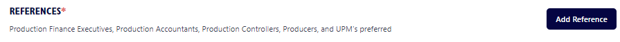

OTTA'S RESUME OF QUALIFICATIONS
The Resume of Qualifications is a scrollable page with several
sections. We will begin with the upper section containing the
information you've already entered.
If you have an
www.iMDB.com
link, you can input the link to your profile here and it will
appear as a hyperlink Employers can easily click on, but this is
not required. We encourage all members to visit
www.iMDB.com
and review your profiles for accuracy. iMDB provides instructions
you can follow to add, edit and/or correct your information.
Credits that you add by providing proof to iMDB of your
employment, according to their instructions, will appear in your
iMDB profile as “uncredited”, but Employers consider these credits
“verified”.

UNION AFFILIATION, OFFICE PREFERENCE & SOFTWARE EXPERIENCE
In this next section, please check items that apply to your
employment data (Items below checked for example only)
RELATED SKILLS, DISTANT OR LOCAL HIRE & HOME BASE:
Check related skills that apply to you, respond to questions
below. If you checked “Willing To Work Abroad”, please include
your passport expiration date, if you have one. Next, please enter
your HOME BASE. This will determine whether you are considered a
LOCAL or DISTANT HIRE for Employer Job Requests.

CREDITS
List your film & television work history in this area. Select “Add
Credit” for EACH show. Click on the Add credit button.
Fields with an * are
REQUIRED FIELDS. The Finance Executive and Production Executive
fields are only REQUIRED for Department Heads.
The “Details” section contains a dropdown of some examples of
situations that increase the complexity of a show. It's not a
complete list, of course…you can address others during your
interviews. Once you've clicked “Details” that applied to that
show, click outside of the area and the dropdown will disappear.
When completing this page, please be as thorough as possible. And
click save when done.
You can always go back and update a credit.
Continue to select “Add Credit” until you've included the work
history you want Employers to see.

When you have completed adding credits, please note the area below
your CREDIT SUMMARY on your Dashboard. Your experience will
automatically generate Accounting Roles in the “CONSIDER FOR”
section.
Select any Accounting Roles you would be willing to accept in the
event that your qualifications and availability match an
Employer's Job Request. Please include your minimum rate; this is
not displayed to Employers. However, if an Employer's wage range
is less than your minimum rate, please know that you will be
excluded from the results that match that Job Request. Keep your
minimum rates low in order to guarantee inclusion in most job
requests. The hiring rate will ultimately be the result of your
negotiations with the Employers. Once your resume begins to
circulate, the information will appear automatically in your Team
Member Dashboard.

OTHER EXPERIENCE
This area will apply if you have experience in this industry you'd
like to include on your resume (i.e. executive positions, staff
positions, or experience in other departments). This is also where
Entry Level Members will fill out
their past work history outside of film & television.


Click Add Other Experience to make an entry. Then, complete the
fields and click Save.
FOREIGN EXPERIENCE
The next section is Foreign Experience and Foreign Languages. Put
your mouse cursor in the box and select from the dropdown menu.
You can add multiple items in these fields by putting your cursor
back in the box after the last selection you made.
EDUCATION
Click “Add School” to enter. If you
have taken any of the Payroll Company classes, CA Film Commission,
or any other certifications, please include it here.

You can update this information or add more education.
REFERENCES - Please enter a minimum of 3 references

Confirm that you are providing current contact information
wherever possible. The top 3 references will appear on the OTTA
Resume.

You can update your reference information or add/change references
at any time.

In order to save your input, you MUST return to the top of the
page and click the “Save” button.

The next step is a review by the OTTA administrator who will
verify your resume prior to approving your account. Upon approval,
you will receive an email with a link to sign in.
ONCE YOU HAVE REGISTERED AND APPROVED:
Clicking the “Sign In” link will
take you to the Member Sign-In page.